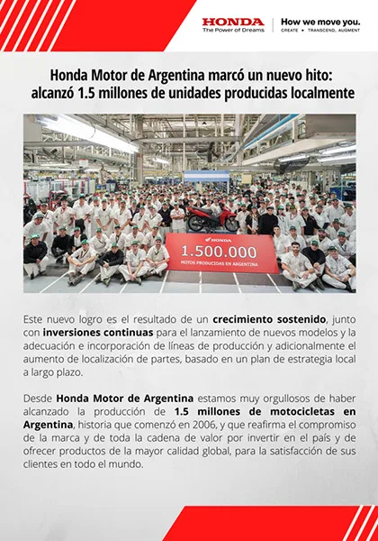
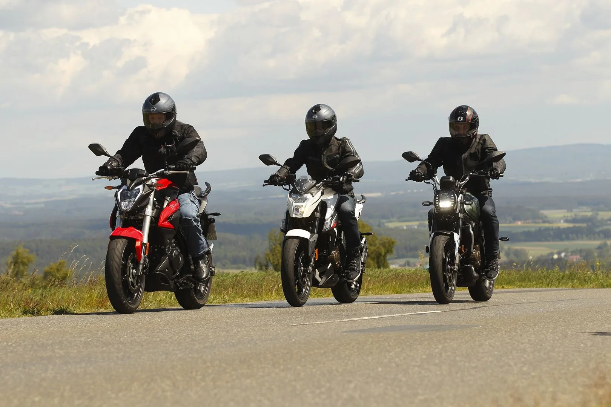
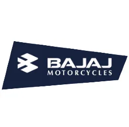
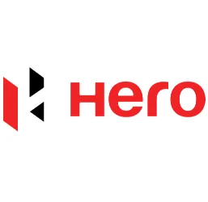
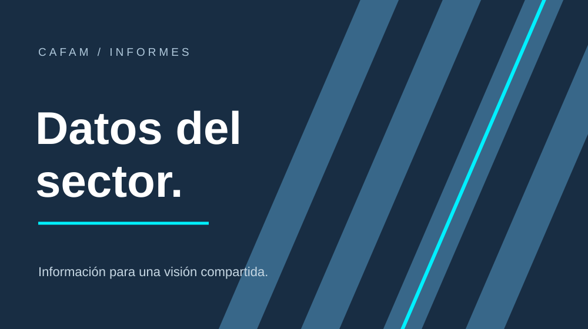
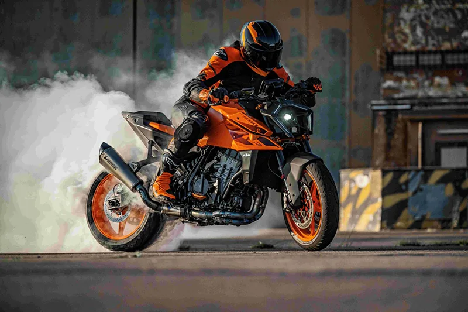

Industria nacional
La producción nacional, una mirada hacia el futuro
Conocé las empresas y las capacidades que impulsan al sector.
Leer nota
Una mirada compartida sobre la industria argentina. Articulamos capacidades para construir nuevas oportunidades para el sector.






Novedades, ideas y perspectivas de las empresas que hacen avanzar al sector.

Conocé las empresas y las capacidades que impulsan al sector.
Leer nota
Tecnología, innovación y movilidad en la agenda de la industria.
Leer nota
Un acceso más claro a los informes y a la evolución del mercado.
Leer nota
Actualidad de las empresas que forman parte de CAFAM.
Leer notaDiálogo y trabajo conjunto entre empresas e instituciones.
Leer nota
Las novedades que acompañan la transformación de la movilidad.
Leer notaTitulares y textos ilustrativos para evaluar el diseño.
Conocé los encuentros y las actividades que reúnen a empresas, instituciones y referentes del sector.
Empresas y marcas que comparten una visión de desarrollo para la Argentina.
Una agenda de trabajo compartida.
Diversidad que fortalece al sector.
Empresas y marcas: valores visibles en el sitio local al 11/11/2026. No son cifras de producción.